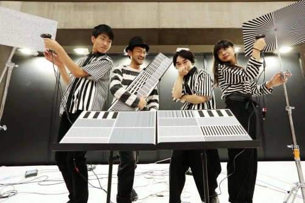

prosthetic knowledge
-
This blog would have been 10 years old today (it’s still retired).
10 years covering the subject of art and technology, yet the blog post that has had the biggest impact is about designing a dildo …
-
Time to call it a day …
I’ve been running this blog for the best part of nine years, mostly as some sort of hobbie project / ‘thing’ presenting ‘stuff’ which is to some degree worth some attention, mainly in the realm of art, tech and computing. For a long time, though, there was a sense that there would be a time when I have reached as far as I could take it, and I’m more than certain that time is now.
I will admit it has been tougher to be vigilant for interesting things which in has reduced any sense of passion to keep the blog running, and that passion has gone.
In the time this blog has been running, it certainly has surprised me how popular it got and at times the kudos it had was rewarding, more than I had anticipated. I’m happy that many here have reached out to say great things about my efforts which are greatly appreciated.
So to all the followers and pornbots that follow this blog, thank you for all the likes and reblogs, and I wish you all the best.
-
Fast Pix2Pix - Update
Interesting additions to project by Zaid Alyafeai which implements neural network image translation speedily in-browser. As well as improved training sets for older subjects, you can now doodle with a Pokemon dataset.
Most impressive is the new Faces v2 addition, which employs semantic labelling method to specify certain facial details within your drawing for more accurate results.
Try it out for yourself here
-
AIRBNB HOSTS
Online game by Dries Depoorter and David Surprenant where you have to choose the right host to the advertised AirBNB room:
We found an Airbnb security issue and made a game with it.
‘Airbnb Hosts’ is a browser game using Airbnb data where you need to guess the owner of the room. The game presents you a picture of an Airbnb room and 3 Airbnb Hosts. You need to match the owner with the room!
You can play the game with rooms of your favourite city. All the data is located on Airbnb servers.
We are not sponsored by Airbnb but we added a button “Book This room” so Airbnb will not to angry using their data and have it online.
Try it out for yourself here
-
Everybody Dance Now
Graphics research from UC Berkeley is the best implementation of motion synthesis with human poses to date, taking the dance moves from one video and recreating it in another:
This paper presents a simple method for “do as I do” motion transfer: given a source video of a person dancing we can transfer that performance to a novel (amateur) target after only a few minutes of the target subject performing standard moves. We pose this problem as a per-frame image-to-image translation with spatio-temporal smoothing. Using pose detections as an intermediate representation between source and target, we learn a mapping from pose images to a target subject’s appearance. We adapt this setup for temporally coherent video generation including realistic face synthesis.
At the moment, there is no official project website / code available, but the official research paper can be found here
-
Video-to-Video Synthesis
Amazing graphics research from @nvidia and @mit is a new image translation / visual synthesis framework designed for moving image (or, to put it another way … a Pix2Pix for video):
We study the problem of video-to-video synthesis, whose goal is to learn a mapping function from an input source video (e.g., a sequence of semantic segmentation masks) to an output photorealistic video that precisely depicts the content of the source video.
While its image counterpart, the image-to-image synthesis problem, is a popular topic, the video-to-video synthesis problem is less explored in the literature. Without understanding temporal dynamics, directly applying existing image synthesis approaches to an input video often results in temporally incoherent videos of low visual quality.
In this paper, we propose a novel video-to-video synthesis approach under the generative adversarial learning framework. Through carefully-designed generator and discriminator architectures, coupled with a spatial-temporal adversarial objective, we achieve high-resolution, photorealistic, temporally coherent video results on a diverse set of input formats including segmentation masks, sketches, and poses.
Experiments on multiple benchmarks show the advantage of our method compared to strong baselines. In particular, our model is capable of synthesizing 2K resolution videos of street scenes up to 30 seconds long, which significantly advances the state-of-the-art of video synthesis. Finally, we apply our approach to future video prediction, outperforming several state-of-the-art competing systems.
You can out more here, as well as at Github for the code here
-
Inventory
Project from Oddviz is a collection of images composed of various 3D scanned objects arranged in visually satisfying compositions:
Our ongoing series ‘Inventory’ is a cultural project where we dig the ephemeral characteristics of the public space and street furniture. Photogrammetry enables us to collect objects in detail and it is possible to create compositions using these objects as units.
We started shooting in our own neighborhood (Kadıköy, Istanbul) practicing on methodology & process of capturing objects in wide range, complexity, size and number. As we traveled for other occasions we’ve always captured in order to expand our inventory: We shot on the streets of Manhattan for a week capturing 400 unique street objects such as fire hydrants, utility poles, booths and statues. We shot 150 ancient wells-fountains in Venice and 200 facades-sidewalks in Kreuzberg-Berlin
Public space collects culture constantly as the surfaces are painted with tags, graffiti and covered with stickers. Conditions change with weather, impacts and maintenance. Interferences create uniqueness, but unlike cultural objects under protection in museums or galleries, street furniture is under constant danger of renovation or replacement. Using photogrammetry, we are documenting and protecting street culture in 3-dimensions with high-resolution texture.
During the creation of our first composition of Istanbul street objects, we let the coincidences lead the way. A random arrangement was appropriate referencing the chaotic soul of the city. During the composition of Manhattan inventory, we rather used an arrangement similar to grid based city plan with an emphasis on vertical growth of the city. Venice inventory installed around the Grand Canal and Berlin seeks the german precision.
We are working on other stills and videos as well as online-VR presentations.
You can view the 4K images for yourself here
-
Recycle-GAN
Graphics research from Carnegie Mellon’s School of Computer Science is an image translation framework which applies better contextual interpretation to targeted outputs in various ways:
We introduce a data-driven approach for unsupervised video retargeting that translates content from one domain to another while preserving the style native to a domain, i.e., if contents of John Oliver’s speech were to be transferred to Stephen Colbert, then the generated content/speech should be in Stephen Colbert’s style. Our approach combines both spatial and temporal information along with adversarial losses for content translation and style preservation. In this work, we first study the advantages of using spatiotemporal constraints over spatial constraints for effective retargeting. We then demonstrate the proposed approach for the problems where information in both space and time matters such as face-to-face translation, flower-to-flower, wind and cloud synthesis, sunrise and sunset.
-
Dynamic density shaping of photokinetic E. coli
Research from Università di Roma and Institute of Nanotechnology, Italy have developed a method to create images with bacteria, controlling the culture to change visual rendition over time (as you can see with the Einstein / Darwin transition):
Many motile microorganisms react to environmental light cues with a variety of motility responses guiding cells towards better conditions for survival and growth. The use of spatial light modulators could help to elucidate the mechanisms of photo-movements while, at the same time, providing an efficient strategy to achieve spatial and temporal control of cell concentration. Here we demonstrate that millions of bacteria, genetically modified to swim smoothly with a light controllable speed, can be arranged into complex and reconfigurable density patterns using a digital light projector. We show that a homogeneous sea of freely swimming bacteria can be made to morph between complex shapes. We model non-local effects arising from memory in light response and show how these can be mitigated by a feedback control strategy resulting in the detailed reproduction of grayscale density images.
[h/t: Brent Marshall]
-
Fast Pix2Pix
Project from Zaid Alyafeai presents a faster interactive verson of familiar image translation demos which presents instant renderings after each drawn input:
A simple implementation of the pix2pix paper on the browser using TensorFlow.js. The code runs in real time after you draw some edges. Make sure you run the model in your laptop as mobile devices cannot handle the current models. Use the mouse to draw.
Try it out here
Update [17/08/18]
The site has been updated to include a sketch-to-face image translation:
Try it out for yourself here
Post updated to include new doodle to face feature.
(via prostheticknowledge)
-
Text to Image
Latest web-based project from Cristóbal Valenzuela is a simple online text to image generator using neural networks to render a visual from what you type in.
It is very simple but generates very abstract results (as you can see in the video above), and you may generate several variations from the same inputted text.
Try it out for yourself here
-
Fast Pix2Pix
Project from Zaid Alyafeai presents a faster interactive verson of familiar image translation demos which presents instant renderings after each drawn input:
A simple implementation of the pix2pix paper on the browser using TensorFlow.js. The code runs in real time after you draw some edges. Make sure you run the model in your laptop as mobile devices cannot handle the current models. Use the mouse to draw.
Try it out here
Update [17/08/18]
The site has been updated to include a sketch-to-face image translation:
Try it out for yourself here
-
The Barcoders

Musical project featuring an ensemble including Ei Wada performs music using barcode readers and, well, barcodes …
Performing at Maker Faire Tokyo 2018, above is a video compilation of examples shared on Twitter profile h.tanaka (have a look to see better quality video examples)
If you like this kind of project, you may like this video profile of Ei Wada put together by toco toco tv here
-
The Alternative Late Show with Stephen Colbert
Short video demo by Cristóbal Valenzuela combines DensePose with Pix2PixHD image translation frameworks presents a form of visual puppetry based on pose detection. Of course, this isn’t perfect, but the results are interesting, and it looks like there will be an interactive demo sometime in the future.
You can view the video here
-
Neural Beatbox
Coding project from Nao Tokui uses neural networks to analyze a short recorded example which is broken down and classified into sound types, and then improvises various rhythms from these samples. The video above is one put together by Nao himself and shared on his Twitter profile.
Neural Beatbox? RNN-based Rhythm Generation + Audio Classification = FUN!
Built with tensoflow.js, magenta.js and p5xjs. Rhythm generation part was based on magenta’s DrumRNN and teropa ’s Neural Drum Machine!
I use my own keras model (converted to TFJS model) to classify sound segments.
The project runs in-browser, and you can try it out for yourself here